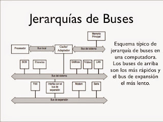

Bus del Cache
L Es un bus dedicado que se tiene en algunas arquitecturas para acceder el caché. En otras arquitecturas el caché se conecta directamente al bus de memoria.
El computador tiene diferentes tipos de buses. Los computadores modernos tienen por lo menos 4 buses diferentes. Se les considera una jerarquía porque cada bus se conecta al nivel superior a él dentro del computador integrando así todas las partes del computador. Cada uno es generalmente más lento que el que se encuentra sobre él (siendo el bus del procesador el más rápido tratándose de que este es el dispositivo más rápido del computador)
Es el nivel más alto en la jerarquía. Es el bus que comunica las partes internas del procesador.
Es usado para enviar información desde y hacia el procesador.
L Es un bus dedicado que se tiene en algunas arquitecturas para acceder el caché. En otras arquitecturas el caché se conecta directamente al bus de memoria.
Este bus conecta la memoria al procesador. En algunos sistemas los buses de memoria y del procesador son básicamente los mismos.
Este es un bus de alta velocidad de entrada/salida y es usado para conectar periféricos cuyo desempeño es crítico (tarjetas de video, discos, redes de alta velocidad) con la memoria y el procesador. Los más conocidos son los buses VESA y PCI.
Este es un bus usado para conectar dispositivos de E/S de baja velocidad (ratón, módems, tarjetas de sonido).
Para dispositivos de video existe también el bus AGP (Accelerated Graphics Port). Este no es propiamente un bus en el sentido que no puede ser compartido por varios dispositivos, sino que sólo permite conectar a él dos dispositivos (por esto su nombre de puerto).
